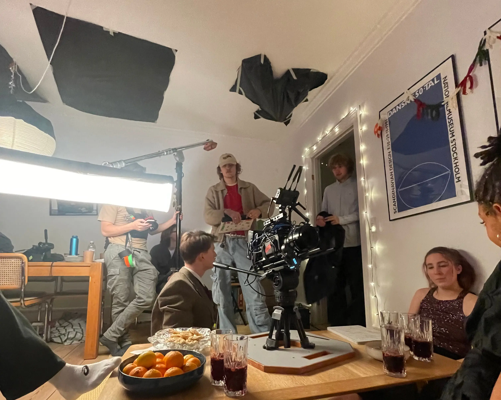

passion for filmproduktion
mød viola...
viola har en stor passion for filmproduktion og når kameraet går i gang, stopper kaoset pludselig, og alting falder på plads. for viola er det i disse øjeblikke, at filmkunsten virkelig kommer til live – når idéer bliver forvandlet til noget konkret, der kan røre og inspirere.
passion for filmkunsten
billedegalleri
